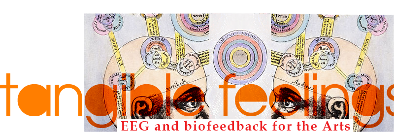

Workshop series · 2011–2013
Tangible Feelings was a traveling workshop on brain–computer interfaces for artists, developed by Mattia Casalegno and Enzo Varriale (Lanvideosource). Between 2011 and 2013 it taught artists, VJs and designers to read brain activity with EEG headsets and turn it into sound and image, building their own real-time audiovisual tools.
It began at iMAL in Brussels, as part of the Tangible Feelings symposium on EEG and biofeedback for the arts, and traveled to Taipei, Rome, Porto and Cape Town. The workshop drew on two earlier EEG-based works: the audiovisual performance Sounds of Complexity (Kinotek, 2004–2007) and the installation Unstable Empathy (2010).


Curriculum
Each edition combined a talk with hands-on sessions.
Talk
- The EEG signal: alpha, beta, theta and delta waves
- Sampling and digitization of EEG signals
- Real-time data protocols, including OSC
- Designing interfaces for EEG-based media art
- Case studies: Sounds of Complexity, audio-visualizing brainwaves in real time, and Unstable Empathy, building intimate relationships with EEG technology
Hands-on
- The Emotiv headset and SDK
- Streaming EEG data over OSC into Max/MSP/Jitter and vvvv
- Basic sonification
- Participants design and build their own EEG-driven audiovisual tools, such as video mixers and sequencers
Editions
-
BrusselsSeptember 2011iMAL, Center for Digital Cultures and Technology, 17–18 September 2011. Workshop by Mattia Casalegno and Enzo Varriale, part of the Tangible Feelings symposium (archived workshop page).
-
TaipeiJanuary 2012Digital Art Center, Taipei, 2–4 January 2012, organised by the Transjourney Future Media Festival (Kuandu Museum of Fine Arts, Taipei National University of the Arts). A three-day workshop led by Mattia Casalegno, with Emotiv EPOC and NeuroSky headsets, Max/MSP/Jitter, Processing and Arduino.
-
RomeMay–June 2012LPM Live Performers Meeting, Planet Alpheus, 31 May – 3 June 2012. EmotiVVVV!, the EEG module of VVVV & brainwaves for AV performance, led by Enzo Varriale with Mattia Casalegno and Kinotek and produced with iMAL as part of Tangible Feelings (announcement on the vvvv blog).
-
PortoNovember 2012ARTES, contemporary art programme of the Fundação Manuel António da Mota, two week-long workshops, 12–16 and 19–23 November 2012, with the support of MuARTs.
-
Cape TownNovember 2013LPM Live Performers Meeting, Cape Town City Hall, 13–16 November 2013: AV Performances with EEG interfaces.
Credits
Developed by Mattia Casalegno and Enzo Varriale. With thanks to iMAL (Brussels), the Transjourney Future Media Festival and the Digital Art Center (Taipei), LPM Live Performers Meeting (Rome and Cape Town), and ARTES – Fundação Manuel António da Mota and MuARTs (Porto).